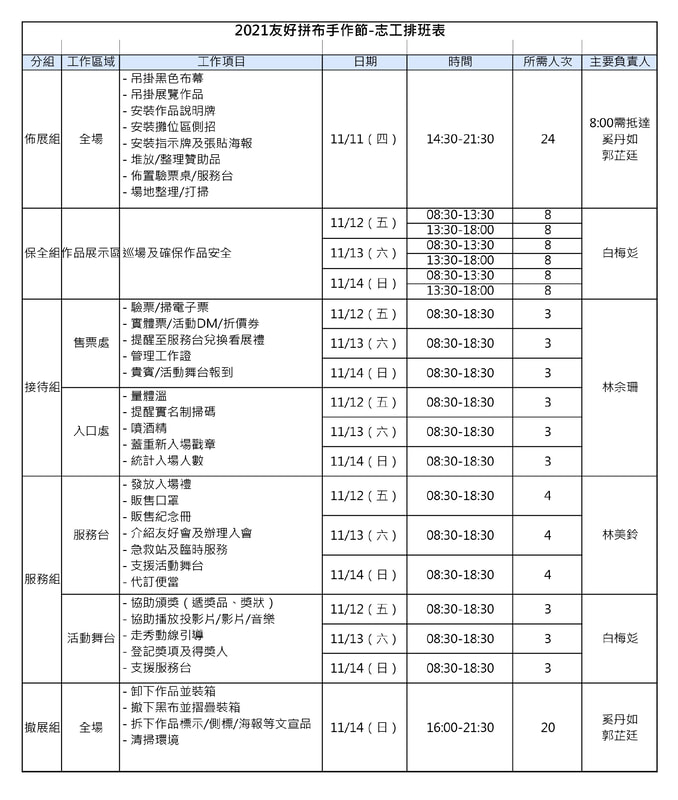

報到與工作安排
志工需按時間在服務台報到，更換工作證入場， 並找各組負責人說明任務及安排調度。
Volunteers
2021 友好拼布手作節
Join Our Team
【2021 友好拼布手作節】不只是單純的作品展，而是集結拼布比賽、 國內外作品邀展、拼布市集、資深老師現場分享、走秀等豐富內容的完整拼布展， 也是受 2019 友好拼布手作節活動圓滿成功的影響，本次展出作品更多， 攤位數也更多，因此，相對展務工作也更多。
所以我們非常重視且需要有您的參與，期待與您互相以友好、團結、互助為本， 為台灣拼布史再寫下一頁美好篇章！
Volunteer Recruitment
【2021友好拼布手作節】即將在 11/11 佈展，再加上 11/12－11/14 連續展出三天，整整四天，需要很多熱血志工一起投入展場各項任務！
在會場除了需執行志工工作外，能免費欣賞作品，並可在現場見到很多久聞其名的老師 或遇見網路上交流過的拼布同好，所有志工也都是 【2021友好拼布手作節】的友好親善大使喔！
志工的工作非常重要！懇請同好們邀請親朋好友一起來， 我們需要您的熱情，請加入志工的行列！
Important Notes
志工需按時間在服務台報到，更換工作證入場， 並找各組負責人說明任務及安排調度。
登記志工後，皆需視人數安排調度， 工作內容可能與您當初登記不同，還請配合調整。
登記同一天兩個時段，優先安排。
【接待組－售票處】的志工有驗票工作，需要使用手機協助掃碼， 需自備可上網、能安裝 App 的手機。
Contact
若有登記當志工的任何問題，比如需要幫忙登記，敬請聯繫：
期待能與您一起相約在松菸拼布盛會喔！謝謝您！
Registration
原網站提供 Google 表單進行志工報名。 因本頁為歷年活動資料，現僅保留當時招募資訊，不再提供報名連結。
Volunteer Work Groups
原活動以表格整理佈展組、保全組、接待組、服務組及撤展組等工作內容、 日期、時段、人數需求與各組負責人。


點擊圖片返回 2021 友好拼布手作節